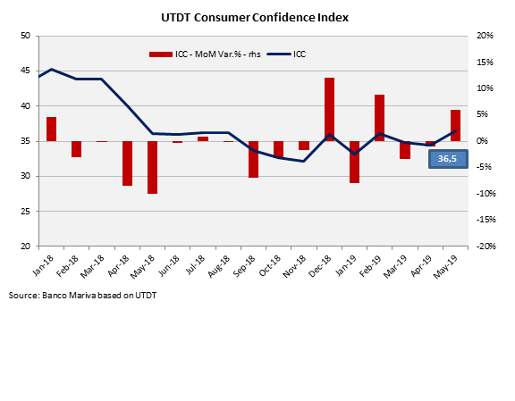
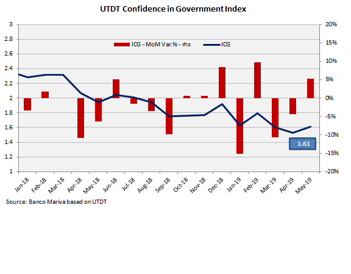

10 de Junio 2019
Finanzas
Qué mira el mercado para entender que nos depara el billete
La calma cambiaria ya lleva un mes y medio. Mejoraron así la confianza en el consumidor y en el Gobierno de Cambiemos. Mauricio Macri mejora en las encuestas. Las expectativas inflacionarias se moderan, mientras que el trabajo sucio de la política monetaria sigue haciendo su trabajo. Aun así, resulta prematuro pensar que la estabilidad llegó para quedarse, sobre todo si se contempla que estamos de frente al inicio formal del calendario electoral.
Menor volatilidad cambiaria
El tipo de cambio acumula un mes sin generar movimientos mayores al 1%, fiel reflejo de que la volatilidad cambiaria se ubica en mínimos. De hecho, la volatilidad del dólar se encuentra en su nivel más bajo en 10 meses, producto de distintos factores que favorecieron a que se reduzcan las expectativas devaluatorias de corto plazo y que trajeron mayor certidumbre entre los inversores. El contexto de mejora cambiaria produjo un repunte en los números del Gobierno en las encuestas y de una mejora en distintos índices de confianza del consumidor de confianza en el Ejecutivo. Se verifica una vez más la hipótesis de que la calma cambiaria es clave de cara a las elecciones.
Desde que el Banco Central (BCRA) anunció que tendrá mayor discreción para vender dólares dentro de la zona de no intervención, el tipo de cambio alcanzó una calma significativa. De esta manera, se alanza un mes en el cual el dólar no se mueve por encima o por debajo de 1%.
Gustavo Yana, Economista de Banco Mariva sostuvo que se verificó en las últimas cinco semanas una marcada estabilidad cambiaria, con el tipo de cambio real multilateral permaneciendo prácticamente sin cambios.
“La estabilidad cambiaria es coincidente con el anuncio del BCRA de que podría intervenir en el mercado de cambios, aún dentro de la ex zona de no intervención, a fines de abril pasado, a la vez que se suma una recuperación en el ritmo de liquidación de divisas por parte del agro”, sostuvo Yana.

Al respecto, el economista de Banco Mariva agregó que el último dato de liquidación de divisas del CIARA-CEC de mayo registró un avance del 42.8% anual y 25.1% mensual respecto de abril pasado.
“En este contexto, no sorprende que tanto el registro del índice de confianza del consumidor (que subió +6% mensual) como el de gobierno (que subió un 5.2% mensual), registraran una mejora en mayo, aunque manteniéndose en niveles históricamente deprimidos”, agregó.
Leé la nota completa en El Cronista
Enlaces de interés